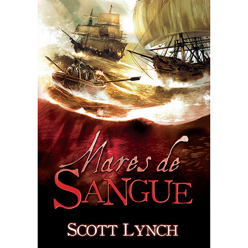

|  |
Mares de Sangue
Após uma batalha brutal no submundo do crime, o golpista Locke Lamora e seu
fiel companheiro, Jean Tannen, fogem de sua cidade natal e desembarcam na exótica Tal
Verrar para se recuperar das perdas e feridas. Porém, mesmo no extremo ocidental da
civilização, não conseguem descansar por muito tempo e logo estão de volta ao que fazem
de melhor: roubar dos ricos e embolsar o dinheiro.
Desta vez, eles têm como alvo o maior dos prêmios, a Agulha do Pecado, a mais exclusiva
casa de jogos do mundo, onde a regra de ouro é punir com a morte qualquer um que tente
trapacear. É o tipo de desafio a que Locke não consegue resistir... só que o crime perfeito
terá que esperar. Antigos rivais dos Nobres Vigaristas revelam o plano a Stragos, o ambicioso
líder militar verrari,
que resolve manipulá-los em favor de seus próprios interesses. Em pouco tempo, a dupla se vê
envolvida com o mundo da pirataria, um trabalho inusitado para ladrões que mal sabem
diferenciar a proa da popa de um navio.
Em Mares de Sangue, Locke e Jean terão que se mostrar malabaristas de mentiras, enganando
todos ao seu redor sem a mínima falha, para que consigam sair vivos. Mas até mesmo isso
pode não ser o bastante...
"Lynch está na vanguarda dos escritores de fantasia que combinam detalhes minuciosos e
grandiosidade épica com astúcia, imprevisibilidade e moral ambígua. Ele tem uma destreza
para diálogos e uma escrita exuberante.
" - Joe Abercrombie
|
Valor: R$ 30,51 |